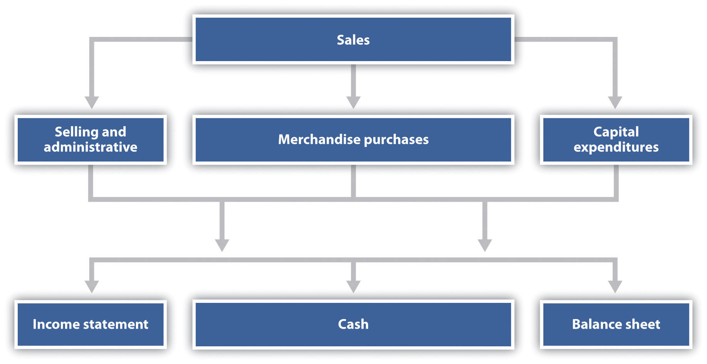

The examples used thus far to describe a master budget have been limited to manufacturing companies. Manufacturing companies tend to have comprehensive operating budgets and therefore serve as a good starting point in learning how to develop a master budget. However, all types of organizations use operating budgets.
Question: What do operating budgets look like for merchandising organizations?
Answer: Merchandising organizations typically purchase finished goods and sell them to retail or wholesale customers. Because merchandisers do not produce goods, they do not use production or production-related budgets.
Figure 9.13 "Master Budget Schedules for a Merchandising Organization" provides an overview of the master budget schedules for a merchandising organization. If you compare this diagram with Figure 9.1 "Master Budget Schedules" (master budget schedules for a manufacturing company), you will notice that production and production-related budgets are not applicable to merchandising organizations. Direct materials are not needed, and all labor and overhead costs are included in the selling and administrative budget.
Figure 9.13 Master Budget Schedules for a Merchandising Organization
The most important aspect of budgeting for merchandising organizations is the merchandise purchases budget. The merchandise purchases budgetAn estimate of the units of merchandise to be purchased and the cost per unit. estimates the units of merchandise to be purchased and the cost per unit. Much like the production budget for a manufacturing company, the merchandise purchases budget estimates units to be purchased (instead of units to be produced) and is based on sales projections, as well as an estimate of desired ending merchandise inventory less beginning merchandise inventory.
Question: What do operating budgets look like for service organizations?
Answer: Service organizations, such as architectural and accounting firms, provide services rather than tangible goods. These organizations do not have raw materials, finished goods, or merchandise inventories, and therefore they do not have production or merchandise purchases budgets. Instead, the focus is on projected sales revenue from services provided and the labor necessary to achieve sales revenue projections. Service organizations must constantly estimate services to be provided and make sure labor force resources are available to meet customer demand.
Question: Not-for-profit organizations, such as school districts and charitable organizations, also use budgets for planning and control purposes. The budgeting process in most not-for-profit organizations is critical because the approved budget often serves as the legal authority for expenditures. What do operating budgets look like for not-for-profit organizations?
Answer: Because not-for-profit organizations are very diverse in nature—for example, some provide a service, while others collect money to help victims of natural disasters or to promote medical research—it is difficult to generalize about which master budget components apply and which do not. However, with an understanding of the budget components used by manufacturing, merchandising, and service organizations, one can establish a budgeting process for virtually any not-for-profit organization. For an example of how one not-for-profit organization goes about the budgeting process, read Note 9.35 "Business in Action 9.3".
Budgeting at a Not-for-Profit Organization
Yearly, a small not-for-profit symphony in California establishes an operating budget with revenues totaling $200,000. The symphony’s treasurer oversees the budget committee, which is made up of three board members. The budget committee is responsible for creating, approving, and monitoring the budget.
The budget committee begins the budgeting process by reviewing information from the year before. All board members and office staff are given spreadsheets showing last year’s results and are asked to provide input for the next budget period. For example, the committee responsible for ticket sales estimates sales revenue based on expected ticket sales times the average sales price. Anticipated increases in sales price are considered in the sales budget.
Expenses are also budgeted based on last year’s actual results. Those requesting increases in budgeted expenditures must justify them. Once revenues and expenses are established for the next budget period, the bookkeeper enters the information using QuickBooks software and prints a preliminary budget report, which the budget committee reviews. Once the budget committee has balanced the budget, reviewed it for reasonableness, and approved it, it goes to the board of directors for approval.
The control phase of the budgeting process requires that all expenditures be in accordance with the budget. Any expenditure exceeding the budget by more than $25 must be approved by the board of directors. A financial report comparing actual revenues and expenditures with budgeted revenues and expenditures (produced using QuickBooks software) is submitted to the board of directors monthly.
Patel and Company performs accounting services for its customers. The company had the following net income for the most recent year:
The following information was gathered to help prepare next year’s budgeted income statement:
Prepare a quarterly budgeted income statement for Patel and Company; include a column summarizing the year.
Solution to Review Problem 9.8
*First quarter budget of $148,500 = $135,000 in last year’s first quarter revenue × (1 + .10).
**Quarterly budget of $63,000 = $60,000 in last year’s quarterly salaries × (1 + .05).
***First quarter budget of $26,250 = $25,000 in last year’s first quarter salaries × (1 + .05). Second, third, and fourth quarter budgets include newly hired staff at $12,000 a quarter.
^Quarterly budget of $11,000 = $10,000 in last year’s quarterly budget × (1 + .10).
^^ No change from last year.
^^^ Quarterly budget of $2,100 = $2,000 in last year’s quarterly budget × (1 + .05).
@ Quarterly budget of $17,500 = $14,000 in last year’s quarterly budget × (1 + .25).
@@ Quarterly budget of $5,850 = $6,500 in last year’s quarterly budget × (1 – .10).